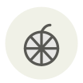

Mandarin
Mandarine
| Latin name | Citrus reticulata |
|---|---|
| Family | Fruits |
| Origin | Southern China |
| Season (France) | November – February |
| Flavour | Sweet · Citrusy · Floral · Fruity |
| Typical price (France) | 3–5 €/kg |
What it is
One of the three ancestral citrus species — nearly every orange, lemon and grapefruit on Earth descends from crosses between the mandarin, the pomelo and the citron. It is a parent, not a variety.
In the kitchen
The loose skin is the giveaway of ripeness and the best part of it. Dry the peel and keep it — it is a spice in Chinese cooking.
Goes with
Dark chocolate Cinnamon Star anise Honey Almond Vanilla Duck Ginger
Same species
Bergamot Candied citron Chenpi Citron Menton lemon Makrut lime
Also used with
In season alongside
Blood orange Cherimoya Meyer lemon Clementine Lychee Buddha's hand
Something wrong here, or missing? Tell us